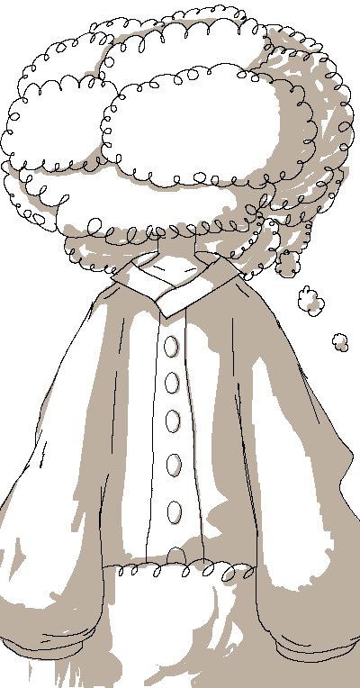

|

|

Collie (The Cloud Giant)
Introduced 31 May 2026
Collie's Associated Music:
Play Music"Collie's Theme: Head in the Clouds"
General Information:
Collie is a key recurring character in Colormill. He is a giant.
Personality:
Collie holds a lot of concern for the well-being of others, often acting very unselfishly. People around him describe him as awfully gentle, and particularly comforting to be around.
He may express himself directly and uncompromisingly on certain occasions, but does so in a way that displays a sense of care.
Rarely, Collie will go through a seemingly sharp internal sense of distress while cycling through intrusive misanthropic thoughts. He is extremely keen on containing his emotional turmoils and not exhibiting negative feelings around other people, although his anxiety can pile up over time in the midst of doing so.
Spawn Quirk:
Collie has the ability to spawn clouds. The kind of clouds that he spawns can be determined by his mood, although this is not always the case. In the rare chance that he experiences anger, he can emit red clouds composed of an unknown material, which has the ability to trigger Phantobot.
Occupation:
Collie is a teacher.
Relationships:
Collie is Amalie's guardian. He takes an interest in her airy nature. Collie met her one day when she was hiding herself in her own spawned clouds among the natural clouds in the sky, where she was feeling a strong sadness. She had hidden herself because of an instance in which she felt that her own social traumas were catching up to her, driving her to a frustration over her own incompetence to do things like other people, and leaving her feeling "broken". In that moment, Collie had a strong desire to protect her and to be able to offer her a safe and nurturing environment. Amalie agrees to let him be such a figure.
Collie has an awkward but stable relationship with Phantobot. Although Phantobot works under him as a harsh punisher, Collie is not particularly fond of their destructive nature, and usually likes to keep a distance. However, they manage to maintain a fresh relationship by offering a sense of newness to each other.
[Colormill Home]
Project Launched 11 February 2026